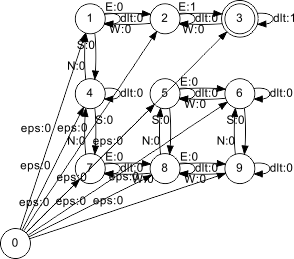
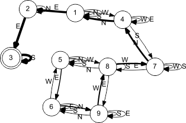

| UASR script util/wm.itp |
|
| General | Signature | : | ||
| Author | : | Matthias Wolff, Werner Meyer |
Synopsis
Utility functions: Finite state world modeling
Example
"$UASR_HOME/scripts/dlabpro/util/wm.itp" include; |
First we create a simple maze world.
## Initialize world model fst itWm; itWm -WM_init; "POSX" ( -type double ) itWm.sd -addcomp; "POSY" ( -type double ) itWm.sd -addcomp; ## Add entry and fall-back transitions 1 var i; i 9 <= while 0 i -1 FALSE itWm -WM_addtrans; i i -2 FALSE itWm -WM_addtrans; :itWm.sd[i,"POSX"]=1.25*(1+(i-1)%3); :itWm.sd[i,"POSY"]=1.25*(3-ent((i-1)/3)); i ++=; end ## Add action transitions 1 2 "E" FALSE itWm -WM_addtrans; 1 4 "S" FALSE itWm -WM_addtrans; 2 1 "W" FALSE itWm -WM_addtrans; 2 3 "E" TRUE itWm -WM_addtrans; 3 2 "W" FALSE itWm -WM_addtrans; 4 1 "N" FALSE itWm -WM_addtrans; 4 7 "S" FALSE itWm -WM_addtrans; 5 6 "E" FALSE itWm -WM_addtrans; 5 8 "S" FALSE itWm -WM_addtrans; 6 5 "W" FALSE itWm -WM_addtrans; 6 9 "S" FALSE itWm -WM_addtrans; 7 4 "N" FALSE itWm -WM_addtrans; 7 8 "E" FALSE itWm -WM_addtrans; 8 5 "N" FALSE itWm -WM_addtrans; 8 7 "W" FALSE itWm -WM_addtrans; 8 9 "E" FALSE itWm -WM_addtrans; 9 6 "N" FALSE itWm -WM_addtrans; 9 8 "W" FALSE itWm -WM_addtrans; ## Add rewards to non-entry transitions to final state 3 :itWm.td["~QR"]=(itWm.td["~INI"].!=0).&&(itWm.td["~TER"].==3); ## Render world automaton "world.eps" NULL "eps" "PQ" itWm -WM_render; |

Rendering of world automaton (world.eps) |
Then we perform some actions in this world and log the world's reactions.
data idLog; 5 itWm -WM_setstate; ( "S" itWm -WM_act ) idLog -cat; ( "W" itWm -WM_act ) idLog -cat; ( "N" itWm -WM_act ) idLog -cat; ( "N" itWm -WM_act ) idLog -cat; ( "E" itWm -WM_act ) idLog -cat; ( "E" itWm -WM_act ) idLog -cat; ( "N" itWm -WM_act ) idLog -cat; ( "E" itWm -WM_act ) idLog -cat; ( "S" itWm -WM_act ) idLog -cat; idLog -print; |
data idLog
---------------------------
0 1 2 3 4 5 6 7 8
. . . . . . . . .
0 nIni: 5 8 7 4 1 2 3 3 3
1 nTer: 8 7 4 1 2 3 3 3 3
2 nAct: 1 2 3 3 0 0 3 0 1
3 nR: 0 0 0 0 0 1 1 1 1
---------------------------
|
And finally we do a Q-learning.
fst itIm; itIm -WM_init; itWm.is itIm.is =; 3 0.9 500 itWm itIm -WM_qlearn; "innermap.eps" NULL "eps" "EL" itIm -WM_render; |

Rendering of Q-learning result (innermap.eps) |
Functions
| Functions | |
-WM_init |
-WM_init(itWm)Creates a new empty world automaton. |
-WM_getactionid |
-WM_getactionid(act,itWm)Returns the zero-based index of an action in the input symbol table if the world model. |
-WM_isineffective |
-WM_isineffective(act,itWm)Determines if an action is ineffective. |
-WM_ensurestate |
-WM_ensurestate(nS,itWm)Ensures the presence of the specified state ID in a world automaton. |
-WM_pathtogoal |
-WM_pathtogoal(nS,itWm)Determines if a goal can be reached from a specified state. |
-WM_findtrans |
-WM_findtrans(nIni,nTer,nAct,itWm)Finds a transition in a world automaton. |
-WM_addtrans |
-WM_addtrans(nIni,nTer,act,bFinal,itWm)Adds a transition to a world automaton. |
-WM_delacttrans |
-WM_delacttrans(act,itWm)Deletes all transitions accepting a given action from a world automaton. |
-WM_render |
-WM_render(sFname,sTool,sFormat,sMode,itWm)Renders a world automaton using the GraphViz toolkit. |
-WM_getstate |
-WM_getstate(itWm)Returns the current state of a world automaton. |
-WM_setstate |
-WM_setstate(nS,itWm)Sets the current state of a world automaton. |
-WM_setrandomstate |
-WM_setrandomstate(itWm)Randomly sets a new current state of a world automaton. |
-WM_act |
-WM_act(act,itWm)Performs one action in a finite state world. |
-WM_qlearn |
-WM_qlearn(nDefQ,nDctQ,nXIte,itWm,itIm)Basic Q-learning of a cognitive agent's inner map of the world. |
-WM_ismastered |
-WM_ismastered(itIm)Determines if the cognitive agent masters its world. |